1. Project description
This project is a small three-tier guestbook application that I originally had running with Docker Compose. For this assignment I moved the application to CSC Rahti using Kubernetes/OpenShift resources.
The application has three main parts:
- Frontend: Nginx serving the guestbook webpage.
- Backend: Flask/Gunicorn REST API.
- Database: MySQL 8.4 storing the guestbook messages.
The main requirement was that only the frontend should be accessible from the Internet. The backend and database should stay inside the Rahti network.
http://frontend-cloud-services-assignment4.2.rahtiapp.fi
GitHub repository:
https://github.com/ZF-25/lemp-rahti-assignment
2. Application architecture
I kept the same basic three-tier idea from the Docker Compose version, but the way the containers are deployed and connected is different in Rahti.
The frontend is the only component exposed through an OpenShift Route. The backend Service and database Service are ClusterIP Services, so they are intended for internal communication inside the Rahti project.
The frontend sends API requests to /api/messages. Nginx
forwards these requests to the backend Service. The Flask backend then
connects to MySQL through the db Service.
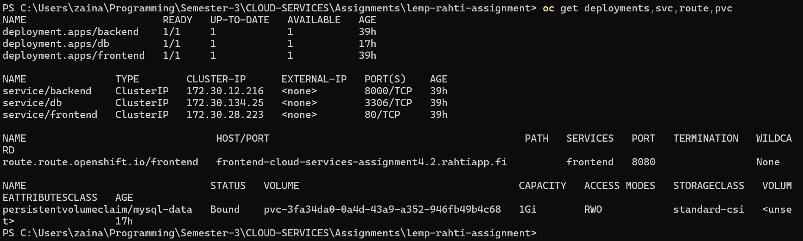
3. Container images and configuration
The frontend and backend images are stored in Docker Hub. MySQL uses the official MySQL image.
| Component | Image |
|---|---|
| Backend | zainabf123/lemp-rahti-backend:1.0.0 |
| Frontend | zainabf123/lemp-rahti-frontend:1.0.3 |
| Database | mysql:8.4 |
I used Kubernetes/OpenShift Deployments for the containers and Services for communication between the application components.
The Kubernetes configuration is kept in the
k8s directory. This includes the Deployments, Services,
Route, ConfigMaps and PVC.
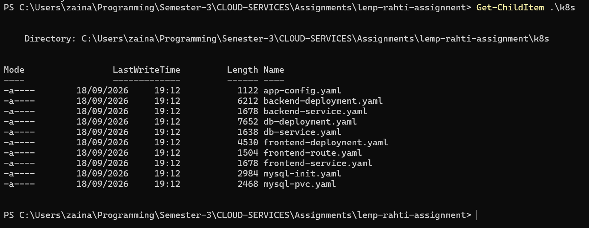
4. ConfigMap and Secret
I used a ConfigMap for normal application configuration and a Secret for database passwords.
The ConfigMap contains values such as:
- Database host:
db - Database name:
appdb - Database user:
appuser
These values are not passwords, so they can be stored in a ConfigMap. Database passwords are different because they are credentials and should not be stored directly in the application configuration or Git repository.
The repository contains a secret-example.yaml file with
placeholder values. The real Secret is created separately in Rahti and
is not committed to Git.
.env file is also ignored by Git.
5. End-to-end application functionality
The application was tested through the public Rahti Route. The browser loads the Nginx frontend, and the frontend calls the backend REST API. The backend then reads and writes data in MySQL.
The request path is:
Browser
|
v
OpenShift Route
|
v
Frontend Service
|
v
Nginx frontend
|
v
Backend Service
|
v
Flask/Gunicorn backend
|
v
DB Service
|
v
MySQL
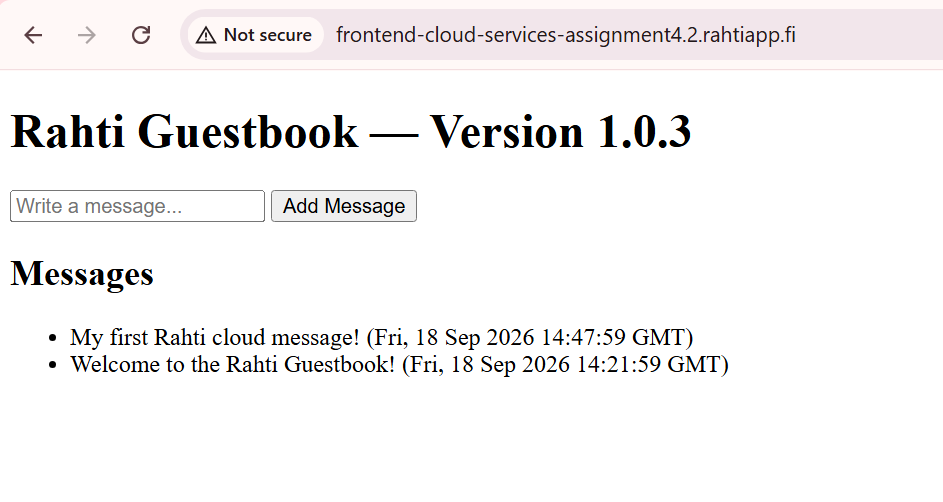
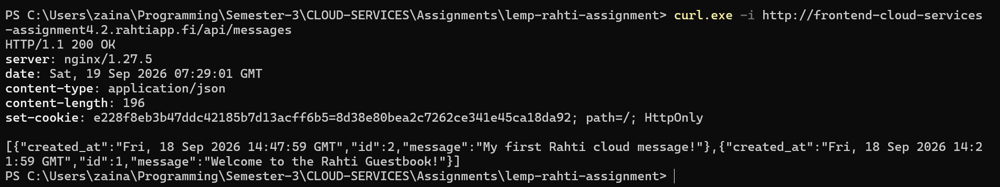
/api/messages request returned
HTTP 200 and JSON containing the stored messages.
This was important because it shows that the frontend is not just displaying hard-coded text. It is getting data through the backend API.
6. Database read operation
The assignment requires at least one database read operation. I tested this directly against MySQL using a SQL query.
One of the queries was SELECT NOW();, which asks MySQL
for its current server time. I also queried the application tables.
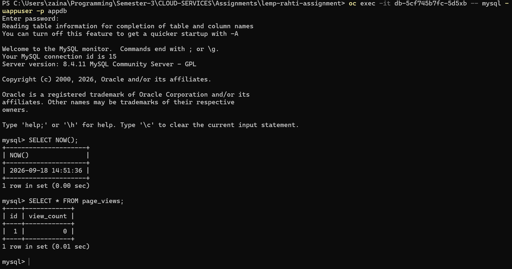
The guestbook also reads the stored messages from the
messages
table. These results are returned by the backend API and then
displayed in the frontend.
7. Database write operation
For the database write operation I used the guestbook message feature. A message can be entered in the frontend and submitted using the Add Message button.
The backend receives the request and inserts the message into the
MySQL
messages table. After that, the frontend can request the
messages again and display the new record.
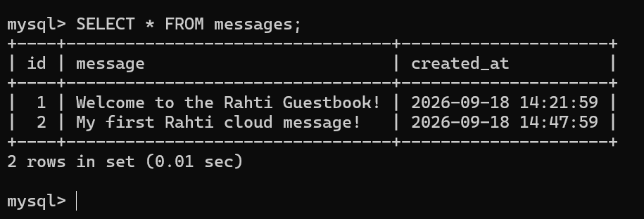
messages table contains the
guestbook entries, including the message added through the
application.
This demonstrates both sides of the requirement: the application writes data to MySQL and later reads the same data back through the REST API.
8. Database persistence
MySQL uses a PersistentVolumeClaim called mysql-data. The
PVC is mounted to the MySQL data directory, so the database files are
stored outside the lifecycle of an individual MySQL Pod.
The PVC is 1 GiB, uses ReadWriteOnce access, and is bound to storage provided by the Rahti cluster.
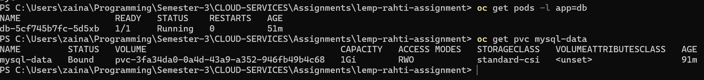
mysql-data PVC was Bound before the persistence test.
Persistence experiment
To test persistence, I first checked that the database contained the guestbook messages. I then deleted the MySQL Pod manually.
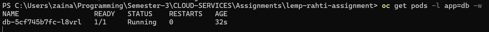
The new Pod mounted the same PVC. I then checked the database again. The previously stored messages were still there.
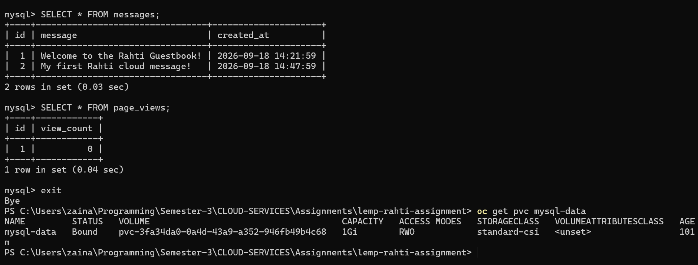
Rahti persistence compared with Docker Compose
In Docker Compose, the database can use a Docker volume that is managed by Docker on the host. In Rahti, the database uses a Kubernetes PersistentVolumeClaim. The PVC requests persistent storage from the cluster and is mounted into the MySQL Pod.
The main difference is that in Rahti the storage is managed as a separate Kubernetes resource instead of simply being a local Docker volume attached to a Compose container.
9. Pod recovery experiment
I tested what happens when a backend Pod is manually deleted.
The backend Deployment was configured with one replica. I deleted the running backend Pod manually. OpenShift then created another Pod to maintain the desired number of replicas.
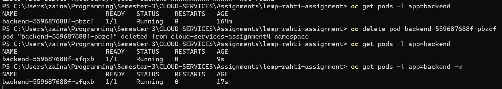
The reason this happens is that the Deployment manages a ReplicaSet. The ReplicaSet makes sure that the desired number of Pods exists. If a Pod disappears, the ReplicaSet creates a replacement.
This is one of the main differences from manually running containers. Instead of me having to start the replacement container myself, the Kubernetes/OpenShift controller handles it.
10. Scaling the backend
I also tested horizontal scaling by changing the backend Deployment from one replica to three replicas.
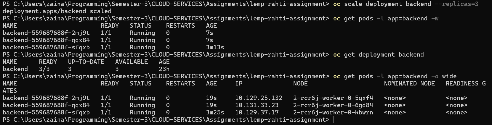
The three Pods had different Pod names and IP addresses, but the frontend did not need to know any of those addresses.
The frontend continues to use the backend Service. The Service selects the Pods using their labels and provides one stable network endpoint for the application.
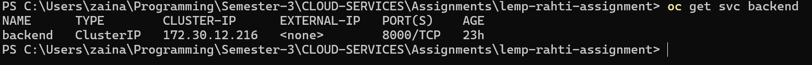
After the experiment I returned the backend Deployment to one replica, which is a reasonable number for this small application.
11. Application update
The assignment also required an application update using a new container image version. I changed the frontend application and created newer image versions during the deployment process.
The final frontend image is:
zainabf123/lemp-rahti-frontend:1.0.3
Version 1.0.3 changes the heading on the page to Rahti Guestbook - Version 1.0.3. This makes it easy to see that the new image was actually deployed.
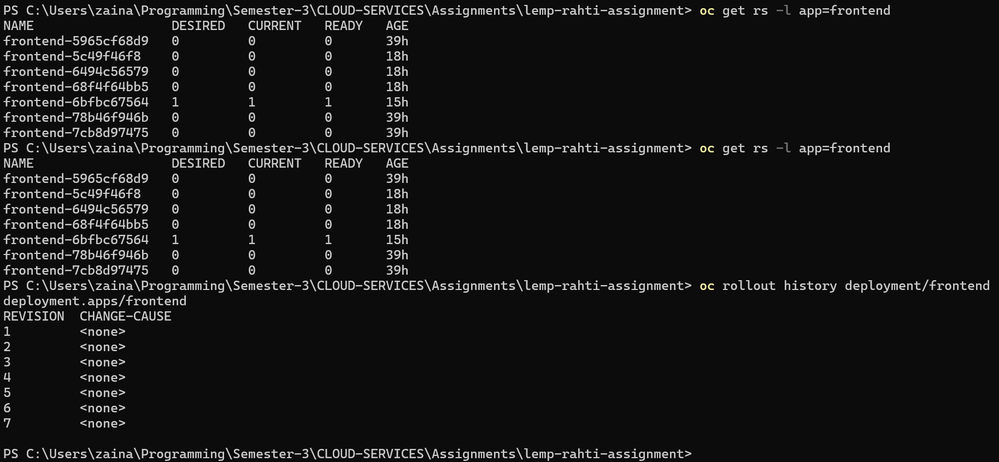
During the update, OpenShift created the new ReplicaSet and Pod and then removed the old active replica after the new version was ready. This is the rolling update behaviour provided by the Deployment.
The old ReplicaSets are still visible in the rollout history with zero active replicas. This is useful because it shows that the Deployment has a history of previous application versions.
12. Problems I encountered and how I solved them
Nginx permissions
The first frontend image did not work correctly with the restricted security settings in OpenShift. Nginx tried to use directories that were not writable by the container user.
I changed the Dockerfile permissions so that the required Nginx directories could be used by the non-root container user.
Nginx port 80
The next problem was that the container tried to listen directly on privileged port 80. This did not work with the restricted OpenShift security context.
I changed Nginx to listen on port 8080 instead. The
frontend Service still provides port 80 internally and forwards
traffic to container port 8080.
Missing database table
At one point the backend returned an error because the MySQL database
contained the original table but not the messages table
required by the guestbook API.
I updated the database initialization configuration to create both the
page_views and messages tables.
Persistent database data
I also had to take into account that MySQL data survives Pod replacement. This means that changing environment variables or initialization files does not necessarily reinitialize the database. I solved the initial database setup issue by recreating the database storage during development, before performing the final persistence test.
Testing the application
I tested the application several times after each change using the browser, the public API endpoint and SQL queries inside the MySQL Pod. This helped me separate frontend, backend and database problems instead of changing everything at the same time.
13. Rahti compared with Docker Compose and cPouta
Docker Compose
In the previous Docker Compose setup, the three containers were described in one Compose file. Compose created the application network and started the containers together. A Docker volume was used for persistent MySQL data.
In Rahti, the same application is split into several Kubernetes resources. There are separate Deployments for the frontend, backend and database, Services for communication, an OpenShift Route for the public frontend, and a PersistentVolumeClaim for database storage.
| Docker Compose | Rahti / OpenShift |
|---|---|
| Compose services | Kubernetes/OpenShift Deployments |
| Compose network | Kubernetes Services and cluster networking |
| Docker volume | PersistentVolumeClaim |
| Published container port | OpenShift Route for the public frontend |
| Manual container restart | Deployment/ReplicaSet Pod recovery |
| Scaling with Compose | Deployment replica scaling |
The biggest practical difference for me was that Rahti manages the application as a set of cluster resources instead of just a group of containers on one Docker host. This also gives features such as automatic Pod replacement and easier horizontal scaling.
Rahti compared with cPouta
cPouta and Rahti are both CSC cloud services, but they are used at different levels. With cPouta, a user can work with virtual machines and has more direct control over the operating system and infrastructure.
With Rahti, the application is deployed into an OpenShift/Kubernetes environment. Instead of managing a virtual machine and installing the container platform myself, I work with Kubernetes resources such as Deployments, Services, Routes, ConfigMaps, Secrets and PVCs.
For this assignment, Rahti therefore changed the way the application is managed. I mainly describe the desired state of the application and OpenShift handles Pod placement, replacement and networking.
14. Git repository
The application and its deployment configuration are stored in a public GitHub repository. The repository contains the application source code, Dockerfiles, Docker Compose configuration and Kubernetes/OpenShift manifests.
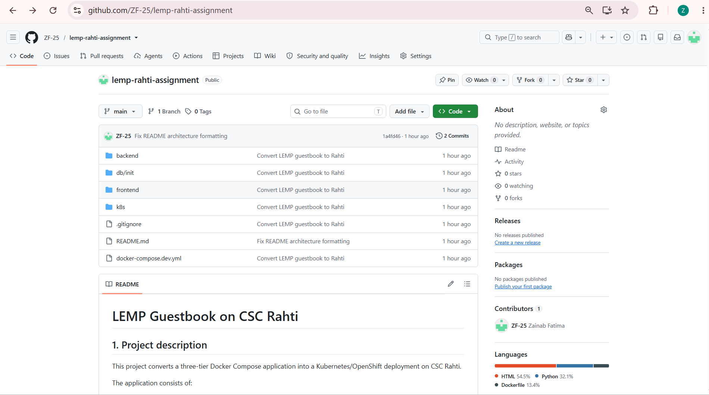
The real database Secret is deliberately not stored in the repository.
The project contains a Secret example with placeholder values instead.
The .env file is also excluded by
.gitignore.
This means another student can see the deployment structure and create their own Secret values without receiving my actual credentials.
https://github.com/ZF-25/lemp-rahti-assignment
15. Final result
After the testing and experiments, the final application has one frontend replica, one backend replica and one MySQL replica. The backend was scaled back down after the scaling experiment.
The frontend is accessible through the OpenShift Route, while the backend and database are internal ClusterIP Services.
MySQL uses the mysql-data PersistentVolumeClaim, so the
guestbook data survives replacement of the MySQL Pod.
The backend Deployment can automatically replace a deleted Pod and can also be scaled to multiple replicas. The frontend Deployment can be updated using a new container image version and a rolling update.
16. Assignment requirement checklist
| Requirement | Evidence in this documentation |
|---|---|
| Frontend, backend and MySQL database | Architecture and final resources screenshots |
| Only frontend publicly accessible | OpenShift Route and internal ClusterIP Services |
| Frontend → backend → database communication | Figures 3, 4 and 6 |
| Database read operation | Figure 5 |
| Database write operation | Figure 6 and the guestbook frontend |
| Persistent database storage | Figures 7, 8 and 9 |
| Pod recovery | Figure 10 |
| Backend scaling | Figures 11 and 12 |
| Application update | Figure 13 and Version 1.0.3 frontend |
| Problems and solutions | Section 12 |
| Rahti vs Docker Compose and cPouta | Section 13 |
| Git repository | Figure 15 and repository link |
17. Repository structure
The important files in the project are organized as follows:
lemp-rahti-assignment/ ├── backend/ │ ├── app.py │ ├── Dockerfile │ └── requirements.txt ├── db/ │ └── init/ │ └── init.sql ├── frontend/ │ ├── Dockerfile │ ├── index.html │ └── nginx.conf ├── k8s/ │ ├── app-config.yaml │ ├── backend-deployment.yaml │ ├── backend-service.yaml │ ├── db-deployment.yaml │ ├── db-service.yaml │ ├── frontend-deployment.yaml │ ├── frontend-route.yaml │ ├── frontend-service.yaml │ ├── mysql-init.yaml │ ├── mysql-pvc.yaml │ └── secret-example.yaml ├── docs/ │ ├── index.html │ └── docs-images/ ├── docker-compose.dev.yml ├── .gitignore └── README.md
The Kubernetes/OpenShift files are kept separately from the application source code so it is easier to see which files are responsible for the Rahti deployment.
18. Conclusion
This assignment helped me understand the difference between running a multi-container application with Docker Compose and deploying it to a Kubernetes/OpenShift platform.
The basic application stayed quite simple, but the deployment side became more structured. I had to create separate resources for Deployments, Services, the Route, ConfigMaps, Secrets and persistent storage.
The experiments also showed some of the useful Kubernetes features in practice. Deleting a backend Pod caused a replacement Pod to be created, scaling produced multiple backend Pods behind the same Service, and the MySQL data remained available after replacing the database Pod because it was stored on a PVC.
The most difficult part was getting the frontend to run with the restricted OpenShift environment. After fixing the Nginx permissions and changing the container port to 8080, the frontend could run correctly on Rahti.
In the end, the complete application was working through the public frontend Route, with the backend and database kept internal and the database data stored persistently.